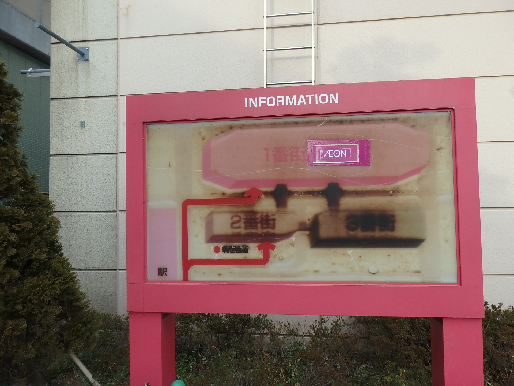
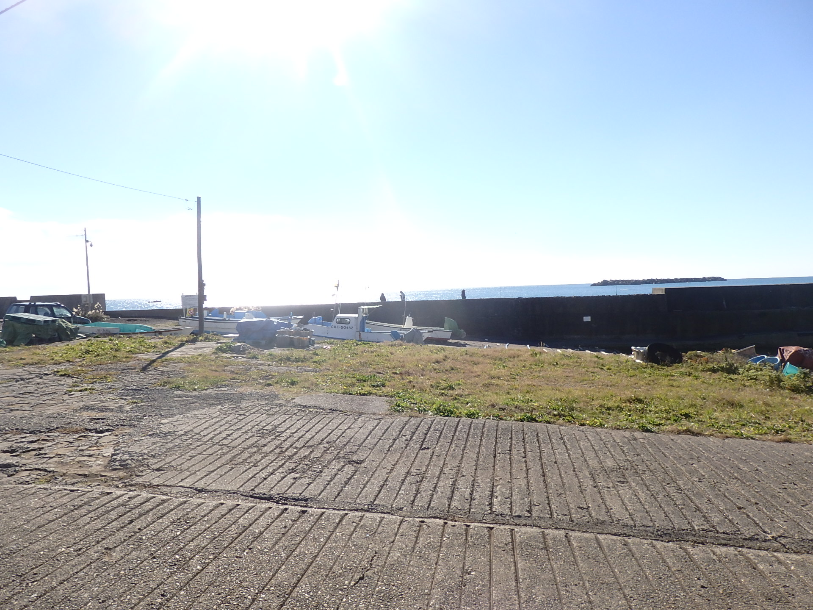
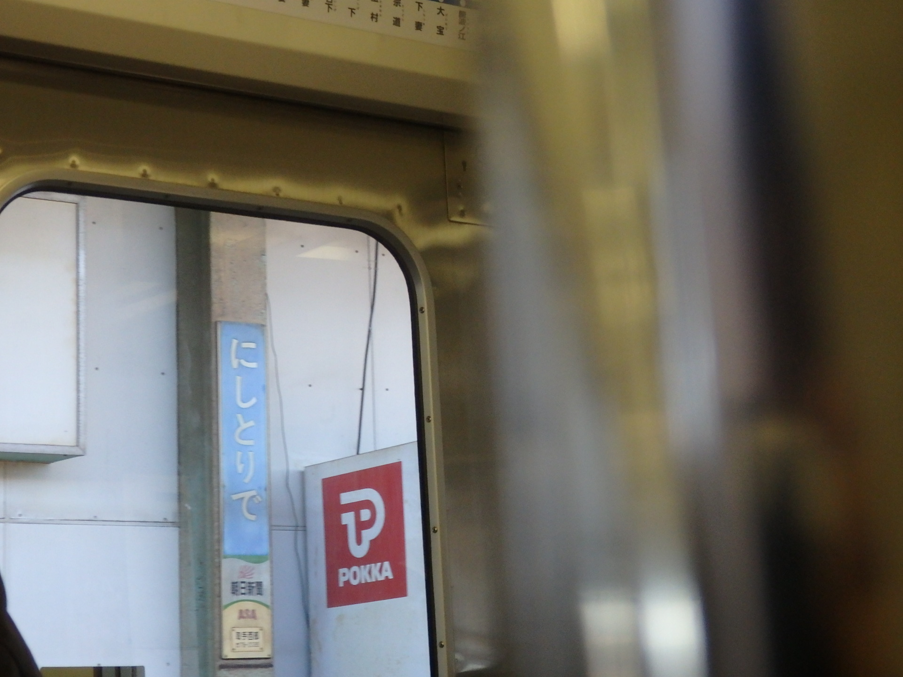
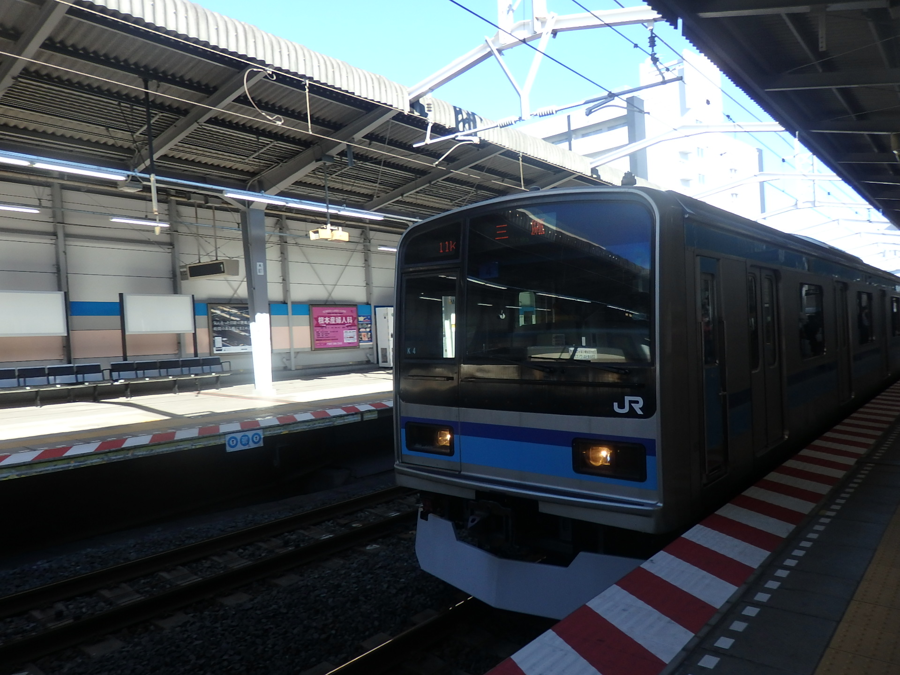
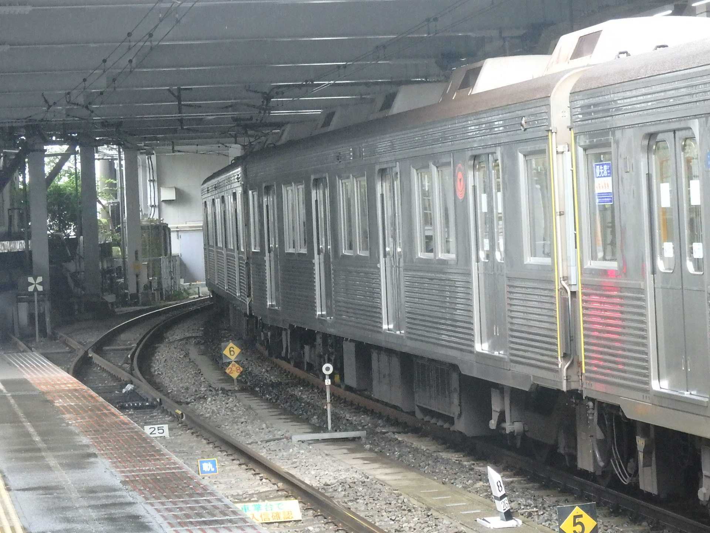
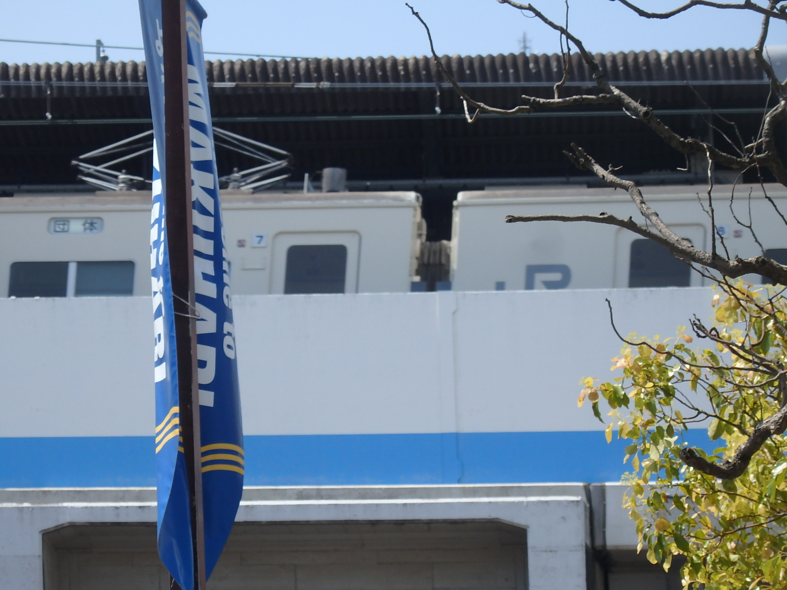
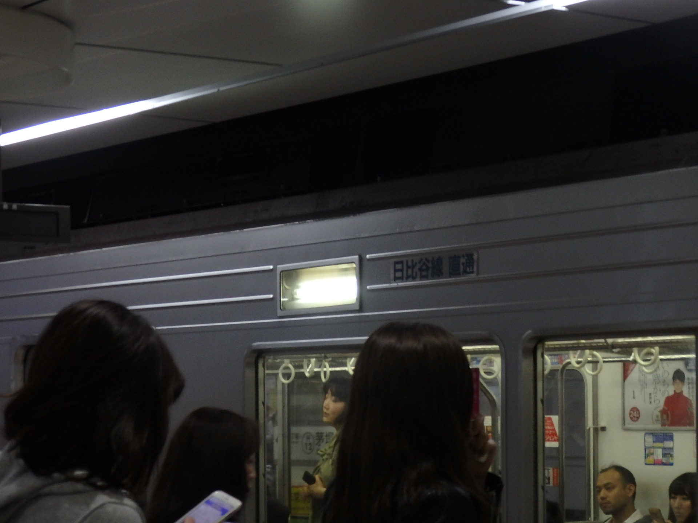

今までのトップページつぶやきまとめ
2017/03/27（実質的には2017/03/26深夜）

京成電車の貫通路。まだまだこんな感じの車両が現役って幸せ。
2017/03/27（11:00くらい）

イオン妙典の看板。イオンでこんなに劣化してる看板を見たのは初めて。
2017年3月30日

やっぱり銚子の海はきれいで良い。また行きたい。
2017年3月31日

関東鉄道のディーゼルカーの乗り心地はよかった。エンジン音も良かった。
2017年4月6日

3か月くらいたったらこの車両が冷蔵庫と化します。回避しよっかなぁ。寒いんだよこいつ。
:2017年4月16日

この連絡線、合流部がホーム上にあるように見える。
2017年5月14日

185系みたいな汎用特急は私鉄だと近鉄と東武（リバティ）くらいしかない。なお近鉄の柔軟さ
2017年5月17日

（幕が）ないです
戻る